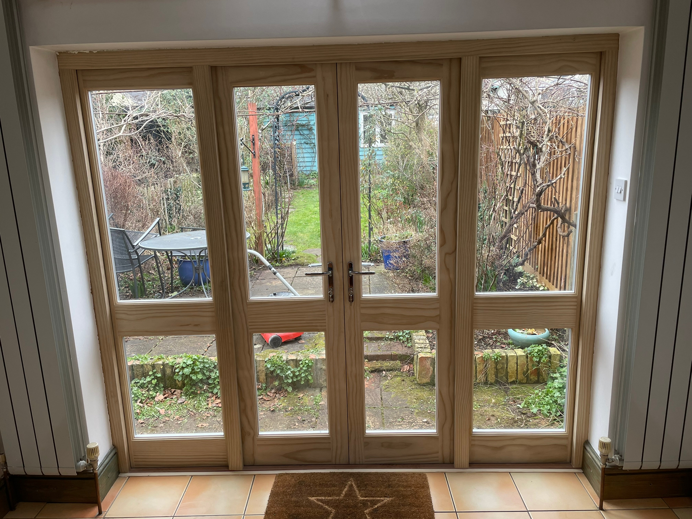
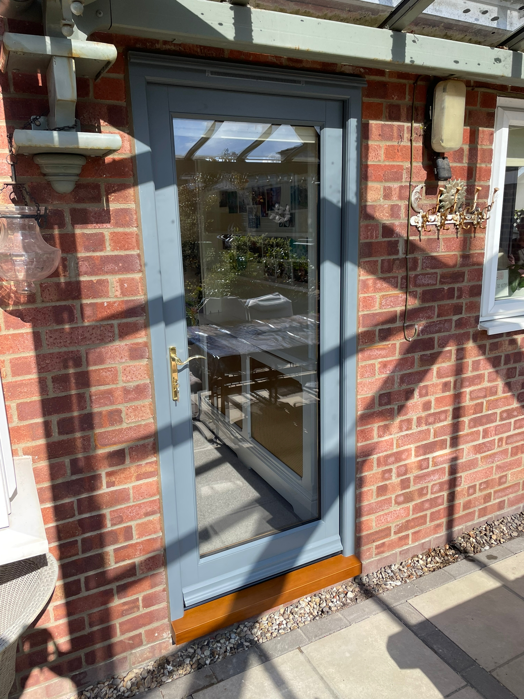
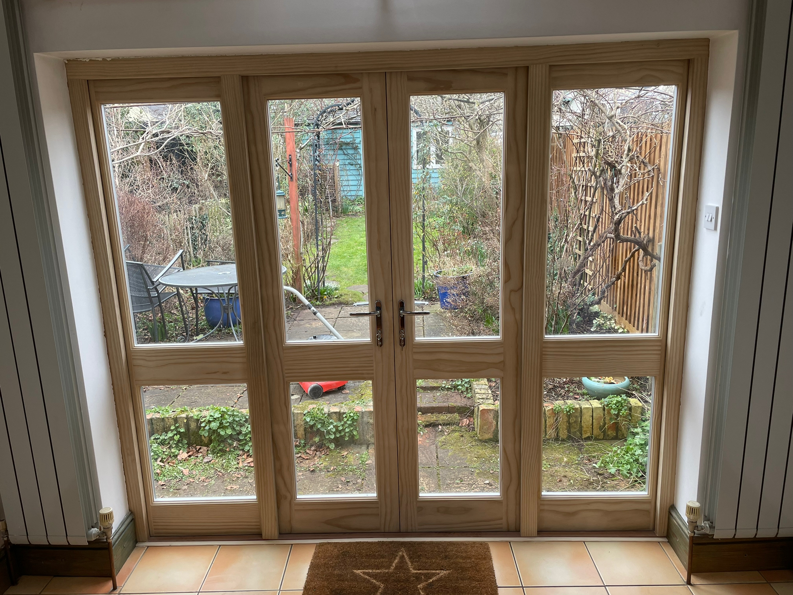
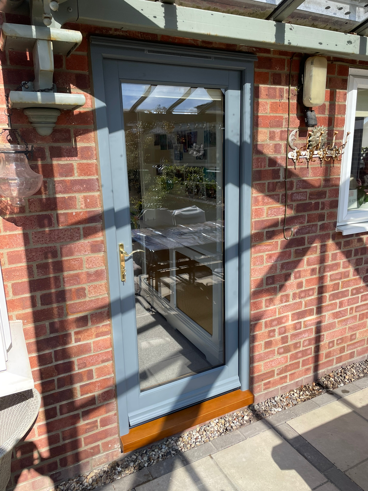

Our Services
Replacements
Our services for replacement timber windows and doors are:
- Sash windows
- Casements
- Bi-Folds
- Internal & External Doors
We will replace all windows and doors bespoke for our customers or like for like if you have a grade listed index or live in a conservation area.
Window Renovation
Following a survey, we will discuss in further detail with you what options you have, and our recommendations to ensure the end result is tailored to your needs.
- Draught Proofing
- Glazing Replacements
- Timber Resin Repairs
- Splicing of new Timber
- Sills Replacement
- Putty Replacement
- Re-cord & Weight Sash Windows
- Replacement Furniture
- Decoration
Glazing Services
With many years of traditional glazing experience, we can replace and install any type of glazing into traditional timber frame windows and doors. We also offer a new innovative option of removing and repairing traditional Stained glass and encapsulating what we have removed into a double glazed unit and installing it into a bespoke joinery product.
What is Encapsulation
Stained glass encapsulation is the sealing of a stained glass panel inside a double glazed unit to form three layers of glass. Some people refer to this process as Triple Glazing of stained glass and other refer to this as Double Glazing. However, both descriptions are referring to the same process.